- Software de sistema
- Software de aplicação
- Software de programação
- Software de seguraça
- Software de bases de dados
- Software de redes
- Software educacional
- Software de entretenimento
- Software de gestão empresarial
- Software de design assistido por computador (CAD)
o que é um software?
conjunto de componentes lógicos de um computador ou sistema de processamento de dados; programa, rotina ou conjunto de instruções que controlam o funcionamento de um computador; suporte lógico.
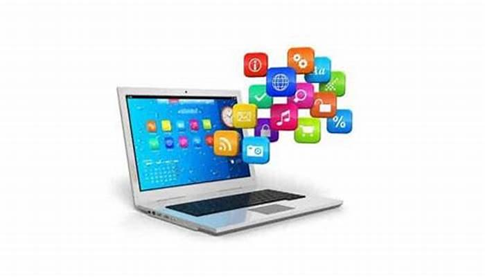Software de programação
Software de programação São as ferramentas usadas pelo programador para desenvolver novos softwares e programas. Usam diferentes linguagens de programação (C, Java, Python, Swift, etc.)
java, html,php
Software de aplicação
Software de aplicativo (aplicativo para curto) é o software de computaçăo projetado para realizar uma tarefa específica que năo se relaciona com a operaçăo do próprio computador, tipicamente a ser usada por usuários finais. Exemplos de um aplicativo incluem um processador de texto e um media player.
Chromo, word, excel, bloco de notas
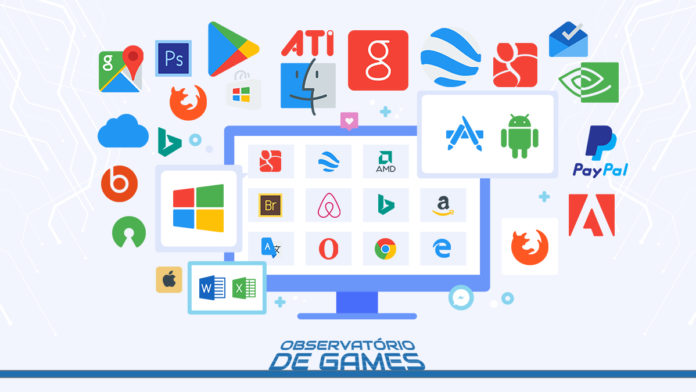Software de sistema
software de sistema ou software base para a série de programas pré-instalados no computador ou sistema computacional e que permitem a interação com o Sistema Operacional (o software que rege o funcionamento de todo o sistema e garante sua operabilidade) , para apoiar outros programas e garantir o controle digital do hardware .
Windows e android
Software de segurança
Software de segurança é um termo amplo que abrange um conjunto de diferentes tipos de software que fornecem dados e segurança de computador e rede em várias formas. O software de segurança pode proteger um computador contra vírus, malware, usuários não autorizados e outras explorações de segurança originadas da Internet.
Norton, Bitdefender e McAfee
software de base de dados
Seja uma pequena empresa ou uma grande corporação, a transformação digital permitiu que as organizações gerassem dados em cada ponto de contato. De dados de clientes à automação de marketing, as organizações precisam armazenar dados de forma organizada, garantindo sua segurança. 91% das empresas com mais de 11 funcionários estão aproveitando CRM e software de banco de dados para otimizar seus dados para todos os tipos de finalidades úteis. E o mercado de CRM móvel e banco de dados cresceu 11% em 2019 e agora vale US $ 15 bilhões. Mas antes de aproveitar as vantagens da ferramenta certa, você precisa escolher aquela que funciona melhor para o seu negócio
Serviço de Base de Dados Relacionais da Amazon (RDS) e Plataforma Google Cloud (GCP)
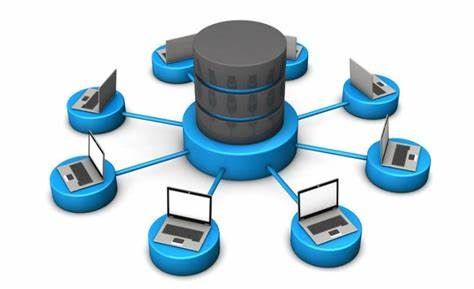Software de Redes
Definição - O que significa Software de Rede? Software de rede é um termo extremamente amplo para uma gama de softwares voltados ao design e implementação de redes modernas. Vários tipos de software de rede suportam a criação, calibração e operação de redes.
switches; roteadores;repetidores; adaptadores de rede; modem; gateway
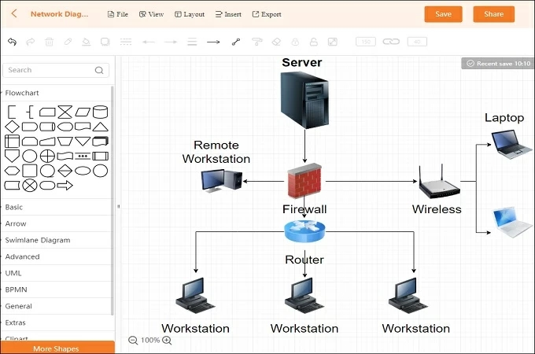Software Educacional
O software educacional é uma solução completa para instituições de ensino de todos os portes e segmentos. Trata-se de um sistema que oferece controle total sobre as atividades da instituição e de seus colaboradores. Mas qual o conceito de software educacional? Seria um sistema próprio para sanar as demandas em sala de aula ou para gerenciar o negócio? Bom, nesse sentido, o software educacional tem relação com a segunda definição — muito embora, dependendo da solução, seja possível contar com recursos que complementem o ensino de forma paralela.
1. Sponte. Galileu. Gennera. Etutore. Wpensar. Quality/Eduxe e Lyceum
Software de entretenimento
O que é um aplicativo de entretenimento? 📱 7 aplicativos de entretenimento para celulares que você ... São diversos shows, espetáculos de teatro, Stand up, cinema e outras atrações que podem ser compradas no cartão de crédito. Os aplicativos são grandes aliados no entretenimento, por isso, é importante selecionar os melhores que atendem a sua necessidade já que existem tantas opções
Games, Filmes, WhatsApp e Instagram
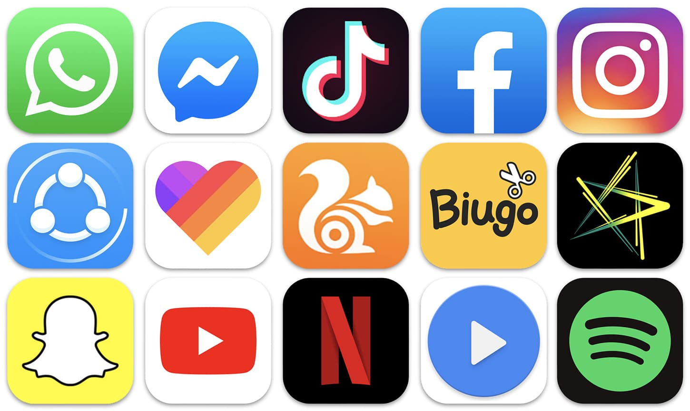Software de Gestão Empresarial
software de gestão empresarial é uma solução que usa a tecnologia para descomplicar e otimizar a gestão do seu negócio. Seu objetivo é facilitar as tarefas do dia-a-dia, automatizando processos e oferecendo informações precisas para uma tomada de decisões com mais rapidez e qualidade. O termo software de gestão empresarial geralmente se refere a um ERP, mas não necessariamente. Na verdade, ele pode ser usado para descrever qualquer software que apoia a gestão do negócio
gestão comercial, gestão de estoque, gestão de faturamento, gestão de CRM e o gestão da equipe de vendas.

Software de design assistindo por computador CAD
"É utilizado principalmente para a elaboração de peças de desenho técnico em duas dimensões (2D) e para criação de modelos tridimensionais (3D). Além dos desenhos técnicos, o software vem disponibilizando, em suas versões mais recentes, vários recursos para visualização em diversos formatos. É amplamente utilizado em arquitetura, design de interiores, engenharia mecânica e em vários outros ramos da indústria."
Inventor CAM, SketchUp, SolidWorks, 3DS Max
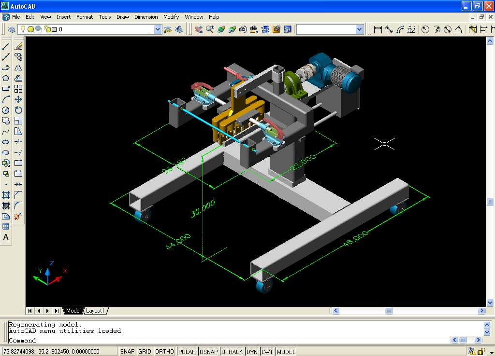Windows 1.0
A história começa antes dele, no MS-DOS. Em 1981, a Microsoft iniciou o desenvolvimento de um software de interface gráfica, que posteriormente veio a se tornar o Windows. Quando finalmente lançado, em 20 de novembro de 1985, o Windows 1.0 era apenas um software de interface bidimensional para facilitar o uso do sistema operacional de computadores IBM da época.Foi a primeira vez que a Microsoft tentou emplacar um sistema com suporte a multitarefas. Para instalar o Windows 1.0, era necessário um computador com “espantosos” 256 KB de RAM, um disco rígido (algo não tão comum na época) e o MS-DOS 2.0 ou mais recente. Nele, estavam as primeiras versões de programas bem populares atualmente, como o jogo Reversi, o Bloco de Notas e o Paint. Softwares complementares, como Calendário, Relógio e apps de comunicação, também estavam presentes. De todas as novidades do software, talvez uma das mais importantes tenha sido o suporte ao mouse. Usuários não precisavam utilizar um PC com linhas de comandos, e este foi um dos primeiros sinais de que a briga com a Apple seria ferrenha. Um ano antes do lançamento, o System 1, parte da família dos sistemas operacionais Macintosh, deram utilidade ao periférico (inclusive, com softwares de treinamento). Portanto, não era uma adição inédita para o mundo.
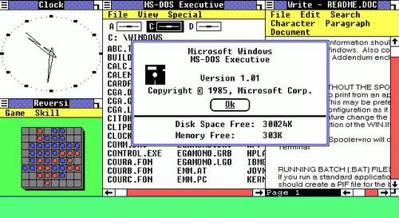Windows 2.0
A maior atualização do software, o Windows 2.0, chegou em 1987 e seguia a mesma proposta de ser um complemento com interface gráfica para o MS-DOS. A maior novidade? Sobreposição de janelas, recurso indisponível na versão anterior. A flexibilidade permitia que o usuário maximizasse e minimizasse uma janela, tal qual como é a função atual. Na época, o Windows 2.0 era transportado em até nove disquetes de alta densidade (316 KB). A interface era praticamente a mesma, mas novas cores, ferramentas e recursos davam um ar de renovação ao update.
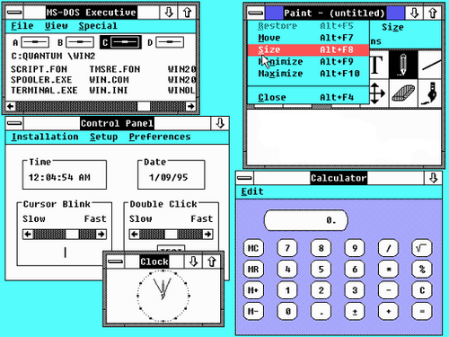Windows 3.x
Três anos depois, o Windows 3.0 foi lançado. Foi o primeiro sucesso da Microsoft em interface gráfica — que ainda rodavam sobre o MS-DOS. Dessa vez, no entanto, era ainda mais claro que a competição com a Apple era o foco. Com ele, os computadores tinham um novo visual, suporte a drives de CD e placas de som, e a primeira versão do tão conhecido jogo Paciência. Para isso tudo, eram ocupados volumosos 5 MB do armazenamento do computador (uma grande coisa para a época).
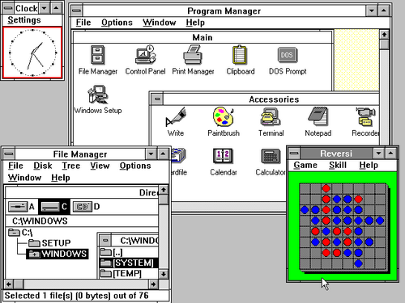Windows 95
Foi no Windows 95 que a Microsoft abriu mão do MS-DOS para colocar a interface gráfica em primeiro plano no sistema operacional. A clássica edição do SO foi lançada em agosto de 1995 e era totalmente nova, significativamente diferente das versões anteriores. O Menu Iniciar finalmente deu as caras, já ao lado da barra de tarefas, ambos presentes até os dias de hoje. Arquivos podiam ter nomes de até 255 caracteres. Foi nessa edição, também, que o Internet Explorer apareceu. Ele não era instalado por padrão, mas era parte de um pacote de atualização chamado Plus.
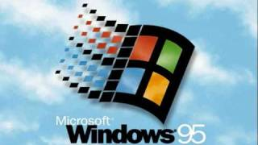Windows 98
Seguindo a janela de atualização de três anos, o Windows 98 foi lançado em 1998. Os avanços foram diretamente relacionados ao Windows 95, mas não foram lá tão significativos. Surgiu o suporte a dispositivos USB e múltiplos monitores. O Internet Explorer deixou de ser adicional e passou a ser o navegador nativo do Windows, colocando a Microsoft em pé de guerra com o Netscape. Depois dele, a versão batizada de Windows 98 Second Edition (SE) corrigiu vários bugs, mas não introduziu muitas novidades.
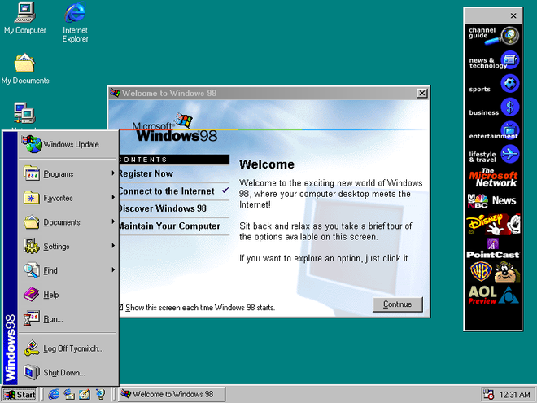Windows ME
Posteriormente, a sequência numérica foi substituída pelo ME, acrônimo para Millenium Edition, na versão do Windows lançada em 2000. O software introduziu algumas melhorias menores ao sistema operacional, e oferecia um boot mais rápido que os anteriores, mas ele não contava com retrocompatibilidade com os programas baseados no MS-DOS, que ainda eram fundamentais para os usuários.As impressões dos consumidores sobre o sistema era de que ele era defeituoso e instável, e seu lançamento foi quase imperceptível — e provavelmente apressado. Naquele ano, a Apple anunciou uma versão do Mac OS X; com receio de perder espaço, a Microsoft se antecipou e liberou o Windows ME. Sua presença não durou muito tempo, já que logo no ano seguinte ele foi substituído pelo queridinho geral, o Windows XP.
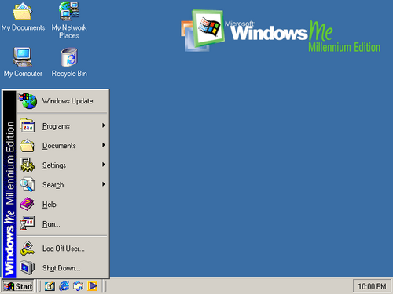Windows XP
Em 2001, a Microsoft botou no mundo o Windows XP. A sigla XP é derivada da palavra “eXPerience”. Uma das suas principais diferenças estava na interface — totalmente retrabalhada nessa versão. Foram embora os formatos quadrados e efeitos tridimensionais em tons de cinza, e uma paleta novamente colorida tomou o seu lugar. A velocidade do sistema era significativamente superior, até na inicialização. O suporte a componentes foi melhorado e a alternância de contas entre usuários finalmente se tornou um padrão.
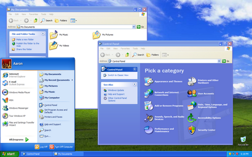Windows Vista
Caminhando para as versões mais recentes do Windows, o Vista foi um dos fiascos mais conhecidos da Microsoft. Visualmente, ele era totalmente novo, graças à nova interface gráfica conhecida como Windows Aero. O sistema operacional foi lançado cinco anos após o Windows XP, em janeiro de 2007. No Vista, a Microsoft queria corrigir um dos defeitos mais criticados do antecessor: a segurança. Infelizmente, porém, ele não era impecável, e ainda continuava com falhas encontradas na edição anterior. O sucessor do XP era visto como pesado, de acordo com os requisitos mínimos da época. Problemas técnicos e termos de licenciamento mais restritivos também fizeram a mídia e os usuários encararem mal a atualização.
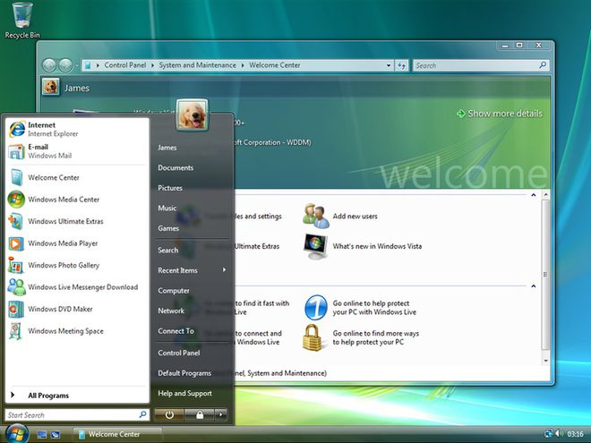Windows 7
Dois anos depois, em 2009, o Windows 7 chegou à festa. Com o mesmo Windows Aero na interface, ele era uma versão infinitamente mais refinada que o Vista, mas sem grandes ambições ou promessas. O foco era ser mais limpo, eficiente e prático de usar — pontos importantes destacados como falhas no antecessor. Foi um sucesso estrondoso na época. Mais de 100 milhões de cópias foram vendidas em todo o mundo — valor que chegou a 630 milhões a julho de 2012. Até 2018, ele foi considerado o sistema operacional mais popular da série, até que perdeu sua posição para o Win 10 (que falaremos mais a frente).
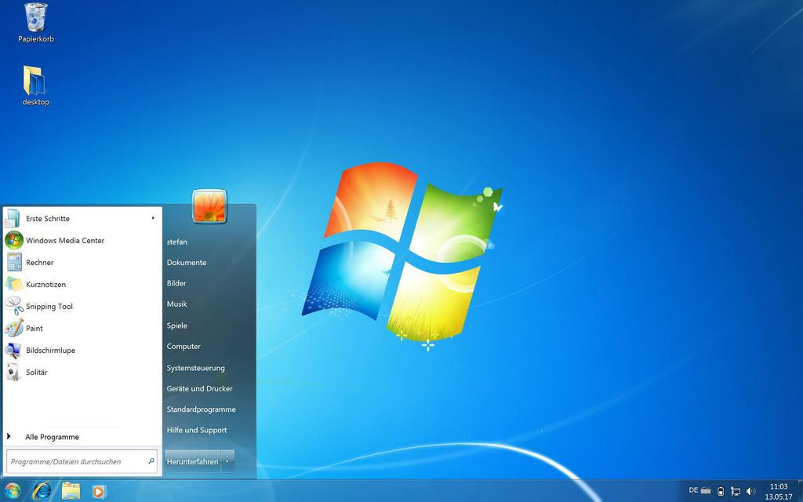Windows 8
Se a Microsoft tinha um vício de alternar entre erros e acertos, o Windows 8 foi mais uma comprovação desse ciclo. O sistema operacional apostava em uma pegada mobile para os computadores, em uma tentativa da Microsoft de unificar as experiências entre PC e os portáteis. Não deu muito certo, especialmente porque a Microsoft abandonou características muito queridas pelos usuários. O Menu Iniciar perdeu a sua disposição mais simples para tomar toda a tela sempre que fosse aberto. O Aero, visual dos Windows 7 e Vista, também foi deixado para trás, o que deixou a comunidade bem desapontada. Windows 8.1 Não demorou muito até que a Microsoft corresse atrás de um paliativo. O Windows 8.1, uma das maiores atualizações do SO, serviu nesse processo e trouxe de volta o botão Iniciar, colocou a área de trabalho como tela padrão após a inicialização e a exibição de aplicativos, antes limitados somente a dois por vez, foi ampliado para quatro.
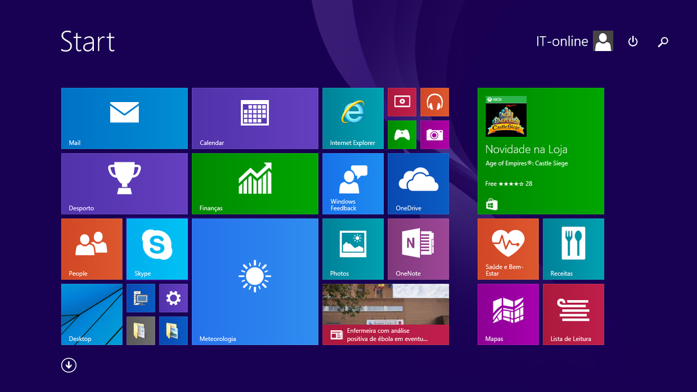Windows 10
Daí, para concretizar os acertos, chegou o Windows 10 em 2015. A Microsoft apostou firme no sistema operacional, tanto que encorajava usuários dos Windows 7 e 8 a migrarem com uma atualização gratuita. Ele melhorou a interface Windows Metro, consolidou a recuperação do Menu Iniciar em sua totalidade (mas modernizado) e proporcionou uma experiência agradável tanto para usuários de mouse e teclado quanto telas sensíveis ao toque. O Microsoft Edge também chegou com ele como parte do pacote (embora tenha fracassado por anos, até incorporar o motor do Google Chrome). A Central de Ações e notificações, adição de aplicativos e uma pegada bem mais amigável com web apps preservaram a visão unificada entre mobile e desktop da Microsoft, mas sem que isso impactasse na experiência dos usuários. A evolução do Windows 10 seguiu constante. A Microsoft não tratava mais seu sistema operacional como um produto, mas como um serviço. Duas vezes ao ano, a marca liberou pacotes de atualizações massivas para renovar a experiência (do visual ao funcional) e muita coisa mudou desde o lançamento.

Windows 11
Para finalizar a festa (por enquanto), o Windows 11 chegou de surpresa em um anúncio em junho de 2021. O sistema operacional seria mais uma enorme renovação da família Windows, incluindo novo visual, funcionalidades, uma abordagem mais amigável com o Linux (incluindo suporte a apps de Android) e muito mais. Ainda assim, o lançamento passou por certas dificuldades. Fantasmas anteriores, como as exigências elevadas de requisitos mínimos, se tornaram um problema logo após o anúncio. O sistema, entretanto, parece mesmo uma evolução direta do antecessor e se mostra capaz de quebrar o ciclo de um acerto seguido de um erro da gigante em termos de mudanças de versão. Menções importantes Ao longo do processo evolutivo do Windows, a linha principal de sistemas operacionais não foi a única a representar as ideias da Microsoft. O Windows Phone e as versões do SO destinadas a servidores também tiveram participação crucial no crescimento da companhia em expertise e em popularidade. No Brasil, por exemplo, o software da empresa que embarcava celulares era bem comum, já que a fabricante Nokia fazia bastante sucesso entre os brasileiros. Além disso, a presença da Microsoft como uma empresa desenvolvedora de software mudou muito ao longo da sua tragetória. A empresa cresceu e revisou conceitos importantes a cada virada e troca de CEO. Quando a liderança de Satya Nadella começou, a marca começou a focar em apps para smartphones e uma integração mais íntima entre portátil-computador. Ademais, games e o ecossistema Xbox também viveram parte dessa evolução, e atualmente, o PC é parte viva do segmento de games da Microsoft. O amplo suporte da companhia às distribuidoras, somado a imensa popularidade do sistema operacional, consolidaram o Windows como um lar para gamers de computador.
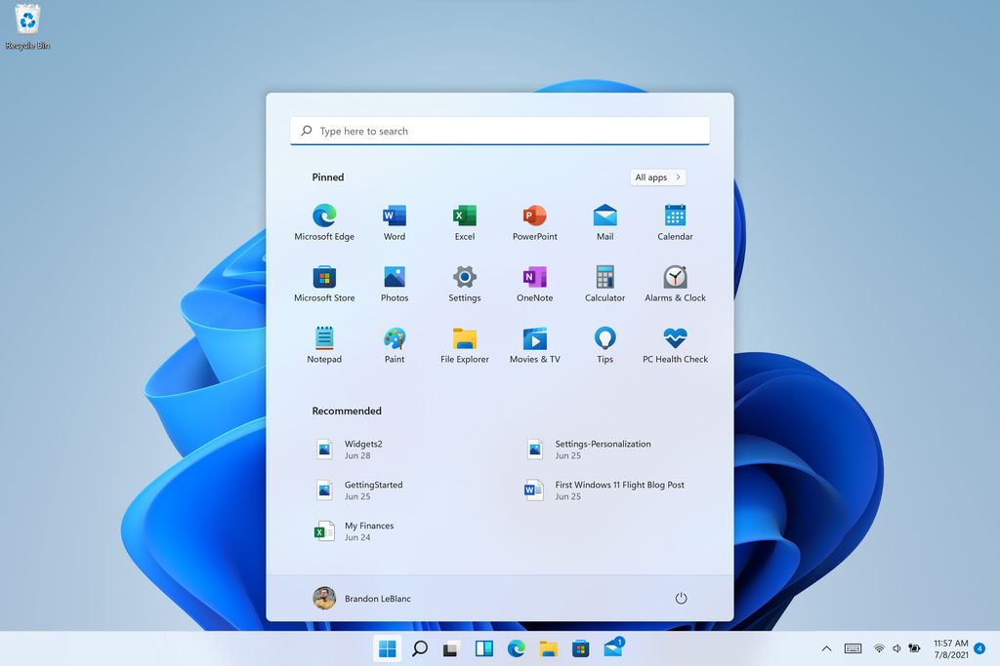 Menções importantes Ao longo do processo evolutivo do Windows, a linha principal de sistemas operacionais não foi a única a representar as ideias da Microsoft. O Windows Phone e as versões do SO destinadas a servidores também tiveram participação crucial no crescimento da companhia em expertise e em popularidade. No Brasil, por exemplo, o software da empresa que embarcava celulares era bem comum, já que a fabricante Nokia fazia bastante sucesso entre os brasileiros. Além disso, a presença da Microsoft como uma empresa desenvolvedora de software mudou muito ao longo da sua tragetória. A empresa cresceu e revisou conceitos importantes a cada virada e troca de CEO. Quando a liderança de Satya Nadella começou, a marca começou a focar em apps para smartphones e uma integração mais íntima entre portátil-computador. Ademais, games e o ecossistema Xbox também viveram parte dessa evolução, e atualmente, o PC é parte viva do segmento de games da Microsoft. O amplo suporte da companhia às distribuidoras, somado a imensa popularidade do sistema operacional, consolidaram o Windows como um lar para gamers de computador.Linux Mint
Linux Mint é uma distribuição Linux criada a partir de uma comunidade baseada no Ubuntu. É amada por pessoas usuárias casuais e profissionais na área da tecnologia. Mesmo abandonado o suporte a versão 20 do Snap, o Mint ainda é bem popular. A interface que o Linux Mint usa é Cinnamon que não faz o usuário se sentir estranho. Para a maioria das pessoas que utilizam o Windows, o Linux Mint vai parecer bem confortável. Você consegue iniciar aplicativos clicando em um botão no canto inferior esquerdo. Ao mudar para o Linux, o sistema de arquivos é diferente. Há muitas coisas novas que você terá que descobrir ao mudar para o Linux, mas com o Mint, a interface é bem amigável para o usuário final. Aumentando consideravelmente a usabilidade e performance. O Linux Mint é a melhor distribuição para usuários novatos no mundo do Linux. É estável e rápido para realizar qualquer tipo de atividade de uma pessoa normal, como assistir vídeos, ouvir música e podendo até jogar um pouco.

Linux Ubuntu
Desenvolvido por uma empresa chamada Canonical, o Ubuntu é baseado em um dos muitos derivados do Linux Debian. Esse software chegou ao mercado em 2004. As pessoas programadoras na época perceberam os destaques do sistema e sua facilidade na programação. A interface de linha de comando permitia que fosse usada uma sintaxe mínima para escrever programas. O Ubuntu tem três versões, todas desenvolvidas para diferentes propósitos. O GNOME é o gerenciador oficial do Ubuntu para a área de trabalho. Também temos por padrão o Firefox, LibreOffice, Gimp, Audacious e Rhythmbox para fechar a linha de aplicativos que vêm com o sistema. A versão mais recente atualmente é a 21.04 LTS, que também é chamada de Hirsute Hippo. Nessa nova versão existem diversas melhorias e mais apelo ao visual dos ícones. Ubuntu é a base das seguintes distribuições: Lubuntu Kubuntu Linux Mint O Ubuntu é o melhor tipo de sistema operacional para pessoas que estão começando no mundo do Linux. Podemos começar utilizando os aplicativos mais comuns e, com o decorrer do tempo, aprimorar o uso.

Linux Deepin
Deepin é uma distribuição baseada em Debian (era baseada em Ubuntu até a versão 15 lançada no final de 2015) que tem como objetivo fornecer uma interface elegante, confiável e amigável. Ele não inclui apenas o melhor que o mundo de código aberto tem a oferecer, mas também criou seu próprio ambiente de área de trabalho chamado DDE ou Deepin Desktop Environment, que é baseado no kit de ferramentas Qt 5. Deepin concentra muito de sua atenção no design intuitivo. Seus aplicativos desenvolvidos internamente, como Deepin Software Center, DMusic e DPlayer, são feitos sob medida para pessoas usuárias médias. Por ser fácil de instalar e usar, o deepin pode ser uma boa alternativa do Windows para uso doméstico e no escritório.

Kali Linux
Offensive Security é a empresa responsável pelo Kali Linux. Ele por si só é uma distro Linux baseada em Debian. Foi projetado para ajudar principalmente profissionais da área de segurança com seus inúmeros testes. Vem com ferramentas como: Nmap Metasploit Framework Maltego Aircrack-ng Especialistas em segurança cibernética e estudantes são o alvo principal do Kali Linux. Principalmente, porque o Kali disponibiliza certificações que são reconhecidas pelo mercado afora, como a Kali Linux Certified Professional e Penetration Testing with Kali. Usando o gerenciador de pacotes APT, a sua versão mais recente é a de 2022.1. Se aventure no mundo da cibersegurança baixando a ISO agora mesmo.

Manjaro Linux
Manjaro Linux é um sistema operacional rápido, amigável e voltado para desktop baseado no Arch Linux. Os principais recursos incluem processo de instalação intuitivo, detecção automática de hardware, modelo de lançamento estável, capacidade de instalar vários kernels, scripts Bash especiais para gerenciamento de drivers gráficos e extensa configurabilidade de desktop. O Manjaro Linux oferece o XFCE como as principais opções de desktop, bem como KDE, GNOME e uma edição minimalista da Net para pessoas usuárias mais avançadas. Faça o download do Manjaro agora mesmo.

Linux Debian
Debian é a distribuição mais antiga e mais popular do Linux. Como qualquer outro distro de peso, fornece uma ambientação muito agradável e rápida. Atualmente, sua última versão é a 11, que também é chamada de Bullseye. O projeto como um todo disponibiliza um monte de pacotes de software, e suporta praticamente todos os dispositivos de computadores da arquitetura recente. As três principais branchs de desenvolvimento do Debian são: Estável Teste Instável Sua versão estável é a recomendada para servidores e usuários desktop. Isso porque é mais estável e confiável, raramente você vai precisar perder o seu tempo tentando arrumar algum bug. Normalmente essa é a versão que você instala no seu computador. A versão de teste é contínua e oferece as versões mais atualizadas dos programas. É muito instável geralmente e provavelmente vai surgir algum bug no meio do caminho. Também não recebe nenhum tipo de patch de segurança. Por último, seu ramo instável é onde o desenvolvimento é mais ativo. É a parte mais experimental e mostra-se como uma plataforma perfeita para que as pessoas desenvolvedoras contribuam para o código.
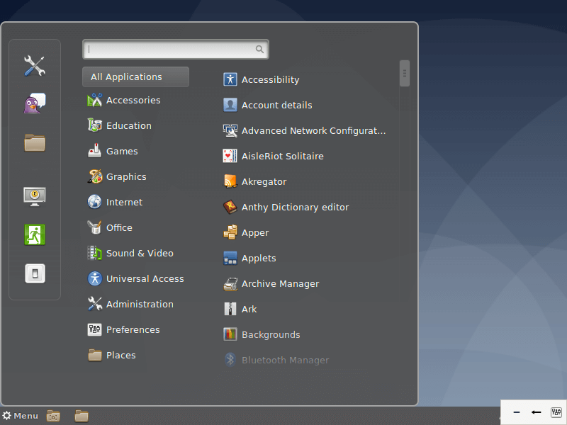Puppy Linux
Puppy Linux é mais uma distribuição Linux. A diferença aqui é que o Puppy é extraordinariamente pequeno, mas cheio de recursos. O Puppy inicializa em um ramdisk e, ao contrário das distribuições de live CD que tem que extrair coisas do CD, ele carrega na RAM. Isso significa que todos os aplicativos começam em um piscar de olhos e respondem à entrada instantaneamente. Puppy Linux é mais uma distribuição Linux. A diferença aqui é que o Puppy é extraordinariamente pequeno, mas cheio de recursos. O Puppy inicializa em um ramdisk e, ao contrário das distribuições de live CD que tem que extrair coisas do CD, ele carrega na RAM. Isso significa que todos os aplicativos começam em um piscar de olhos e respondem à entrada instantaneamente. O Puppy Linux tem a capacidade de inicializar através de um cartão flash ou qualquer dispositivo de memória USB, CD ROM, disco Zip ou LS / 120/240 Superdisk, disquetes, disco rígido interno. Ele pode até usar um CD-RW / DVD-RW formatado em várias sessões para salvar tudo de volta no CD / DVD sem a necessidade de nenhum disco rígido.

Linux OpenSUSE
O OpenSUSE é mais uma das distribuições Linux que tem como objetivo fornecer uma interface moderna e rápida para pessoas usuárias de desktop e desenvolvedoras de todo mundo. São dois ramos de desenvolvimento principais: SUSE Leap, que é a versão estável e que é voltada para as pessoas usuárias, como também para as pessoas desenvolvedoras. Tornando a escolha perfeita para quem quer ajudar no desenvolvimento de código aberto. Em contrapartida, temos o SUSE Tumbleweed, que seria a versão de teste contínua com as mais recentes versões de software e IDEs. O TumbleWeed é fácil para qualquer pessoa usuária avançada ou desenvolvedora de software, graças principalmente ao seu grande número de pacotes disponíveis. O seu gerenciador de pacotes é o Yast e é muito recomendável para que você administre os seus programas e desenvolva aplicativos com ele.

Linux Lite
Linux Lite é uma distribuição Linux amigável para iniciantes baseada no lançamento de suporte de longo prazo (LTS) do Ubuntu e utilizando o desktop XFCE. O Linux Lite é voltado principalmente para pessoas usuárias ativas do Windows. O objetivo é fornecer um conjunto completo de aplicativos para auxiliá-las em suas necessidades diárias de computação, incluindo um pacote de escritório completo, reprodutores de mídia e outros softwares diários essenciais.

MX Linux
MX Linux é uma distribuição Linux feita para desktop baseada na branch “Stable” do Debian e é um empreendimento cooperativo entre o antiX e as antigas comunidades MEPIS Linux Utiliza o XFCE como a área de trabalho padrão (com edições separadas do KDE Plasma e Fluxbox também disponíveis), é um sistema operacional de peso médio projetado para combinar uma área de trabalho elegante e eficiente com configuração simples, alta estabilidade e desempenho sólido.

Linux CentOS
O Linux CentOS é mais um sistema operacional gratuito que tem como objetivo criar um ecossistema de código aberto confiável. Ele é baseado no RHEL, e é uma das alternativas do Red Hat Enterprise Linux por ser gratuito. A sua última versão estável é a 8.5.2111 e oferece muita confiança e estabilidade por utilizar o RHEL. Permitindo que as pessoas usuárias aproveitem todas as atualizações gratuitas.

Arch Linux
Arch Linux é a distribuição que foi projetada para pessoas usuárias avançadas ou especialistas em Linux. Sendo possível configurar e personalizar o sistema da maneira que a pessoa usuária quiser. Podemos dizer também que o Arch é voltado para pessoas que gostam de ter controle sobre o seu sistema operacional. O sistema de versionamento do Arch é atualizado constantemente, ou seja, é contínuo, e se for necessário, você consegue atualizar todos os pacotes pelo terminal. É utilizado o gerenciador de pacotes Pacman e também temos o AUR (Arch User Repository) que é a comunidade detentora dos pacotes de software. A sua versão mais recente é a 2022.03.01.

Linux Zorin OS
Zorin OS é uma distribuição Linux baseada no Ubuntu projetada especialmente para iniciantes no Linux. Possui uma interface gráfica de usuário semelhante ao Windows e muitos programas semelhantes aos encontrados no Windows. O Zorin OS também vem com um aplicativo que permite executar vários programas do Windows. O objetivo final da distribuição é fornecer uma alternativa Linux ao Windows e permitir que as pessoas usuárias do Windows aproveitem todos os recursos do Linux sem complicações.

Linux Slackware
O lançamento oficial do Slackware Linux foi feito por Patrick Volkerding e é um sistema operacional Linux avançado. Foi projetado com o objetivo de ser um sistema fácil de usar e é principalmente estável. Inclui a maioria dos aplicativos mais recentes enquanto tenta manter um senso de tradição, proporcionando simplicidade e facilidade de uso junto com a flexibilidade e poder, o Slackware tenta trazer o melhor de todos os mundos. O Slackware Linux oferece a pessoas usuárias novas e experientes um sistema completo, equipado para servir em qualquer capacidade, desde uma estação de trabalho pessoal a um servidor em uma sala de máquinas. Um leque completo de ferramentas de desenvolvimento, editores e bibliotecas atuais estão incluídos para quem deseja desenvolver ou compilar programas nele.

Oracle Linux
O Oracle Linux é uma distribuição Linux para a classe empresarial e é suportada pela Oracle que a constrói a partir dos pacotes do Red Hat Enterprise Linux (RHEL). Alguns dos recursos especiais do Oracle Linux incluem um kernel Linux desenvolvido sob medida e rigorosamente testado denominado “Oracle Unbreakable Kernel“, forte integração com os produtos de hardware e software da Oracle, incluindo a maioria dos aplicativos de banco de dados e todas as outras funcionalidades disponíveis no mercado.

Linux Fedora
Fedora dentre as distribuições linux é a que mais se destaca por ser realmente simples e prover uma grande quantidade de aplicativos previamente instalados. Isso a torna uma distribuição muito amigável e que facilita a entrada de novas pessoas usuárias. É flexível e poderoso, baseado no Red Hat, também é utilizado como ambiente de teste da transição do Red Hat. Foi feito tanto para sistemas de desktop, servidores e ecossistemas IoT. É utilizado principalmente para fins de desenvolvimento e muito útil para pessoas desenvolvedoras e estudantes. O Fedora utiliza como gerenciador de pacotes padrão o DNF e tenta oferecer o que tem de melhor em programas no RPM. A sua versão mais recente é a Fedora 35.
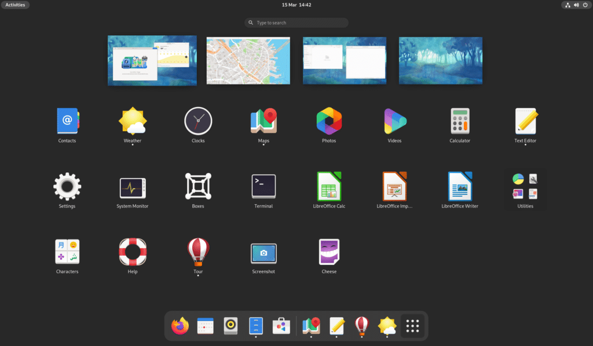Tails Linux
The Amnesic Incognito Live System (Tails) é uma distro baseada em Debian com o objetivo de fornecer anonimato completo na Internet. O sistema vem com várias aplicações de Internet, incluindo um navegador web, cliente IRC, cliente de e-mail e mensageiro instantâneo, todas pré-configuradas com a segurança em mente e com todo o tráfego anonimizado. Para conseguir isso, o Incognito usa a rede Tor para dificultar o rastreamento do tráfego da Internet.